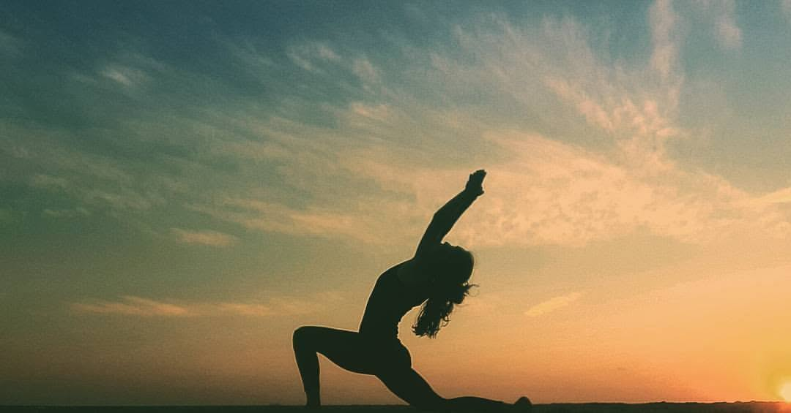

היי, אני שחר. התשוקה שלי לתנועה ולחיבור בין גוף לנפש החלה כבר מגיל צעיר. כמדריכת יוגה, פילאטיס ומלווה נשים בתהליכי הריון ולידה, האני-מאמין שלי הוא שכל גוף מסוגל להתרפא, להתחזק ולהתפתח דרך תנועה מדויקת וקשובה.
במהלך השנים ליוויתי עשרות נשים ומתאמנים בדרכם לבניית יציבה נכונה, שיקום מחיזוק שרירי הליבה, והתאמת פעילות גופנית מותאמת אישית בתקופות השינוי של הריון ולאחר לידה.
"הליווי של שחר במהלך ההריון עזר לי לשמור על כושר ללא כאבי גב. השיעורים שלה הם אי של שקט בשבוע."
"בזכות אימוני הפילאטיס הצלחתי לחזור לעצמי מהר מאוד לאחר הלידה. היחס האישי והדיוק בתנועה פשוט מדהימים."
"היוגה של שחר שינתה לי את התפיסה על כושר. הגעתי עם כאבי כתפיים כרוניים והיום אני מרגיש חזק ומשוחרר."
הצצה קצרה לתרגילים ולמגוון הסגנונות בסטודיו
🎥 סרטון יוגה בוקר לרענון
🎥 דגשים לחיזוק רצפת אגן